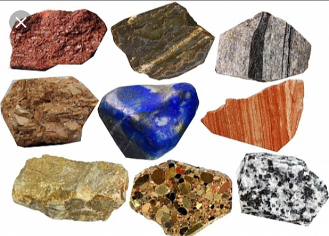
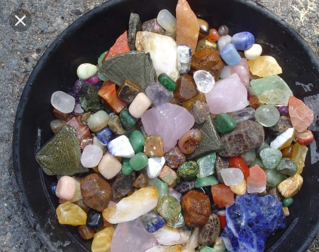

Minerals are classified by key chemical constituents; the two dominant systems are the Dana classification and the Strunz classification. Silicon and oxygen constitute approximately 75% of the Earth's crust, which translates directly into the predominance of silicate minerals. The silicate minerals compose over 90% of the Earth's crust. The silicate class of minerals is subdivided into six subclasses by the degree of polymerization in the chemical structure. All silicate minerals have a base unit of a [SiO4]4− silica tetrahedron – that is, a silicon cation coordinated by four oxygen anions, which gives the shape of a
There are 2 major groups of Minerals.


Both of these groups are divided into 8 major classes.
| Group | Composition | Example |
| Elements | Uncombined elements | Copper,Gold,Sulfur |
| Silicates | metals,Silicon,Oxygen | Quartz,Feldspar,Micas |
| Carbonates | metals,Silicon,Oxygen | Clcite,Dolomite |
| Oxides | metals,Oxygen | Hematite,Bauxite |
| Sulfide | Sulfur,Metals | Galena,Pyrite |
| Sulfates | Metals,Sulfur,Oxygen | Gypsum,Barite |
| Halides | Metals,chlorine,Fluoroite,Iodine,or Bromine | Halite,Fluorite |
| Phosphates | Phosphurous,Antimany,Arsenic | Apatite,Monasite |